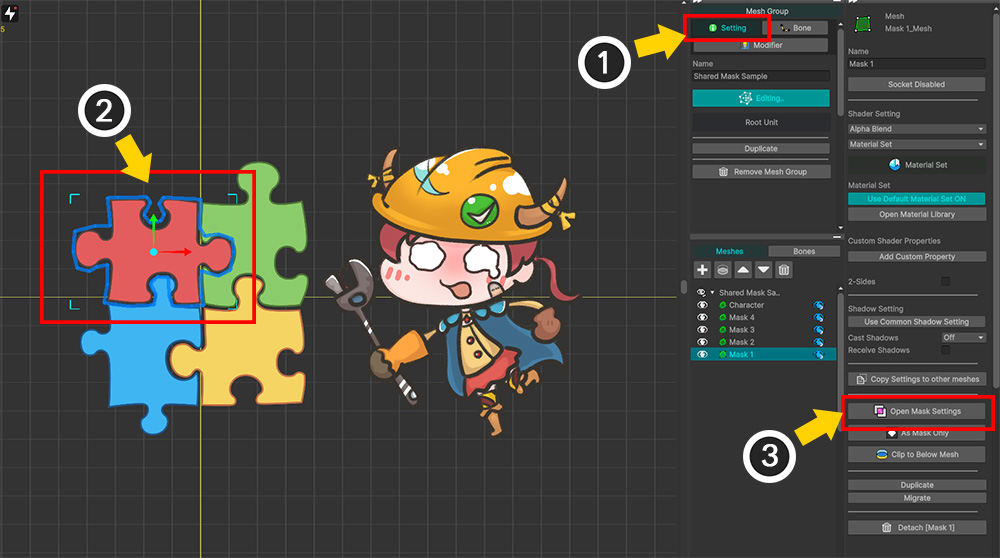

AnyPortrait > 메뉴얼 > 마스크
마스크
1.6.0
AnyPortrait v1.6.0에서는 기존의 클리핑 마스크 (Clipping Mask) 기능이 더 확장되었습니다.
크게 강화된 마스크 (Mask) 기능은 메시의 렌더링 순서와 무관하게 마스크를 생성하여 다른 메시로 전달할 수 있습니다.
또한 마스크 생성 방식이나 전달되는 프로퍼티 등을 사용자가 자유롭게 설정할 수 있습니다.
이를 활용하면 사용자가 별도의 쉐이더나 스크립트를 작성하지 않고도 다양한 표현이 가능할 것입니다.
이 페이지에서는 마스크 기능의 기본 작동 방식과 기본 사용법을 다룹니다.
또한 새로 추가된 공유 텍스쳐 (Shared Texture)에 대해서도 다룹니다.
이 페이지에서 다루지 못한 다양한 기능들과 다양한 활용 방법들을 다음의 메뉴얼에서 같이 확인해보세요.
- 마스크와 커스텀 쉐이더
- 마스크 조합하기
- 마스크 체인
- 마스크 전용 메시
- 투과(See-Through) 효과
마스크의 작동 방식
AnyPortrait는 마스크를 구현하기 위해서 렌더 텍스쳐 (Render Texture)를 이용합니다.
마스크를 생성하고 렌더링에 활용하는 과정을 개략적으로 표현하면 위 이미지와 같습니다.
마스크의 역할을 하는 메시가 알파 마스크 렌더 텍스쳐를 생성하며, 생성된 알파 마스크 렌더 텍스쳐가 대상 메시에 전달됩니다.
대상 메시가 렌더링 될 때 알파 마스크 렌더 텍스쳐를 활용하여 이미지의 일부가 클리핑됩니다.
앞서 다룬 마스크 동작에 관한 컨셉을 바탕으로, AnyPortrait에서는 어떻게 이를 구현했는지 조금 더 알아봅시다.
세로 방향은 카메라로의 일반적인 렌더링 과정을 의미하며, 가로 방향은 마스크 데이터를 전달하는 과정을 의미합니다.
마스크 메시가 쉐이더를 통해서 렌더링을 하는 과정에서, 알파 마스크 쉐이더 (Alpha Mask Shader)를 이용한 렌더 텍스쳐 렌더링도 같이 수행합니다.
알파 마스크 쉐이더를 이용하여 렌더링을 할 때, 기본 렌더링시에 사용되는 프로퍼티 값이 활용됩니다.
알파 마스크 쉐이더는 커맨드 버퍼를 통해서 동작하며, 이 과정을 통해 생성된 알파 마스크 렌더 텍스쳐 (Alpha Mask Render Texture)는 대상 메시로 전달이 됩니다.
대상 메시는 렌더 텍스쳐를 포함한 마스크 데이터를 받아서 클리핑 기능을 가진 쉐이더를 통해 화면으로 렌더링이 됩니다.
요약하자면, 마스크를 렌더링하기 위해서는 다음의 2단계가 수행되어야 한다고 정리할 수 있습니다.
(1) 알파 마스크 쉐이더를 이용하여 렌더 텍스쳐가 렌더링됩니다.
(2) 렌더 텍스쳐를 포함한 마스크 데이터를 대상 메시로 전달하여 렌더링합니다.
이 방식을 이해했다면, 마스크 기능의 각종 옵션들이 어떤 역할을 하는지 쉽게 알 수 있습니다.
마스크를 실제로 적용해봅시다.
간단한 마스크 예제

마스크를 테스트해보기 위해 준비한 간단한 예제입니다.
"노란색 원형 메시 (Yellow Circle)"를 마스크로 삼아서, 이를 "붉은색 별 모양의 메시 (Red Star)"에 적용해보겠습니다.
두개의 메시의 사이엔 파란색 사각형 메시가 존재하는데, 이는 기존의 클리핑 마스크와 달리 이러한 경우에도 마스킹이 가능한 것을 보여드리기 위함입니다.
(1) 메시 그룹을 선택하고 Setting 탭을 선택합니다.
(2) 마스크의 역할을 하는 메시를 선택합니다. (아무 메시나 선택해도 됩니다.)
(3) 메시를 선택하면 마스크와 관련된 버튼들이 등장합니다. 버튼들 중에서 Open Mask Settings 버튼을 누릅니다.
마스크 기능과 관련된 버튼들은 다음의 역할을 수행합니다.
- Open Mask Settings : 마스크 설정 다이얼로그를 엽니다.
- As Mask Only : 선택된 메시를 마스크 전용 메시로 설정합니다. (관련 페이지)
- Clip to Below Mesh : 선택된 메시를 아래 레이어에 위치한 메시에 의해서 클리핑되도록 설정합니다.

AnyPortrait v1.6.0에서 새로 추가된 마스크 설정 다이얼로그가 열립니다.
이 다이얼로그에서 현재 편집 중인 메시 그룹의 모든 마스크 설정을 편집할 수 있습니다.
1. 마스크 데이터 리스트 : 메시들의 마스크 데이터를 모두 보여줍니다. 마스크 데이터들은 렌더 순서에 따라 페이즈 (Phase) 단위로 묶여서 보여집니다.
2. 마스크 생성 옵션 : 마스크를 생성하는 옵션들입니다.
3. 대상 메시 리스트 : 선택된 마스크 데이터가 전달되어 도착할 대상 메시들이 보여집니다.
4. 전달되는 프로퍼티 리스트 : 마스크 데이터는 렌더 텍스쳐를 포함한 프로퍼티들의 조합의 형태로 대상 메시에 전달됩니다. 이 항목에서 전달되는 프로퍼티들을 설정합니다.
각 항목에 대한 자세한 설명은 아래에서 다시 확인할 수 있습니다.
일단 마스크를 생성하는 기본 과정에 대해서 알아봅시다.

(1) Add Mask 버튼을 눌러서 새로운 마스크 데이터를 생성합니다.

(2) 마스크 데이터는 "마스크를 생성하는 메시"를 기준으로 작성되므로, 마스크를 생성하는 메시(여기서는 Yellow Circle)를 선택합니다.
(3) Select 버튼을 누릅니다.
참고
이 창에서는 2개 이상의 메시들을 선택하여 동시에 추가할 수 있습니다.
여러 개의 메시들을 추가했다면 그 수만큼의 마스크 데이터가 생성됩니다.
마스크 데이터는 메시당 생성되기 때문입니다.
메시당 2개 이상의 마스크 데이터를 가지는 것은 가능합니다.
(1) "Yellow Circle" 메시에 대한 마스크 데이터가 생성되어 리스트에 추가되었습니다. 이 데이터를 클릭하여 선택합니다.
(2) 이 마스크 데이터는 Alpha 채널에 의한 클리핑을 수행할 것이므로, Shader Type의 값을 Alpha Mask로 설정합니다.
(3) 이 마스크 데이터를 전달 받을 메시를 지정해야하므로 Add Destination 버튼을 누릅니다.
(4) "Red Star" 메시를 선택합니다.
(5) Select 버튼을 누릅니다.

(1) 마스크를 전달 받을 대상으로서 "Red Star"가 등록된 것을 볼 수 있습니다.
(2) 이제 마스크 데이터가 어떤 프로퍼티의 형태로 전달될 지 설정해야 합니다.
Add Property 버튼을 눌러서 프로퍼티 정보를 구성해봅시다.
만약 쉐이더의 특정 프로퍼티를 선택하여 설정하고자 한다면 Add Property from List 버튼을 누르는 것도 좋습니다.
(3) 새로운 프로퍼티 정보가 추가되었습니다.
프로퍼티 정보의 기본값은 "Alpha Mask Preset" 타입입니다.
이는 Alpha Mask를 이용한 일반적인 클리핑 렌더링을 위한 프로퍼티들을 프리셋으로서 구성한 것입니다.
이 예제에서는 Alpha Mask를 테스트해보고자 했으므로, 기본값을 그대로 사용하겠습니다.

마스크 설정 다이얼로그를 닫고 렌더링 결과를 확인해봅시다.
(1) 노란색 원형 메시를 마스크로 삼아서 붉은색 별 모양 메시가 클리핑 된 것을 볼 수 있습니다.
(2) 오른쪽 Hierarchy UI를 보시면 마스크의 송신/수신 여부에 따라서 아이콘이 바뀐 것을 볼 수 있습니다.

Bake를 하고 유니티 씬에서 클리핑 렌더링 결과를 볼 수 있습니다.
마스크 기능이 동작하지 않아요!
마스크 기능이 동작하려면 같이 업데이트된 v16 재질 세트가 필요합니다.
마스크 기능이 동작하기 위해서는 이어서 설명할 쉐이더의 프로퍼티들이 필요하기 때문입니다.
현재 적용되어있는 재질 세트가 마스크 기능을 지원하는지 여부를 확인해봅시다.
이 설명은 재질 라이브러리 메뉴얼에서도 볼 수 있습니다.

(1) AnyPortrait v1.6.0에서의 기본 재질 세트가 "Unlit (v16)"으로 바뀌었습니다. 이전 버전의 기본 재질 세트인 "Unlit (v2)"에서는 마스크 기능이 동작하지 않습니다.
(2) 내장된 재질 프리셋의 설명에 "Multi-Masks" 키워드가 있다면, 해당 재질 프리셋으로부터 생성된 재질 세트는 마스크 기능을 지원합니다.
(3) 마스크 기능을 지원하는 일부 재질 프리셋과 재질 세트의 아이콘에는 마스크 표시가 추가되었습니다. (마스크 표시가 없다고 해서 마스크를 꼭 지원하지 않는다는 것을 의미하지는 않습니다.)

(1) 마스크 기능 지원 여부를 확인하는 가장 확실한 방법은 "Reserved Properties"에서 이 페이지에서 설명하는 마스크용 프로퍼티가 존재하는지 확인하는 것입니다.
(1) 기본 재질 세트인 "Unlit (v16)"외의 다른 v16 재질 프리셋를 이용하기 위해서는 새로 추가된 패키지를 설치해야합니다.
(2) 마스크를 지원하지 않는 이전 버전의 재질 프리셋의 패키지들은 "Legacy"로 분류되었습니다.
마스크 설정 다이얼로그
마스크 설정 다이얼로그의 각 항목은 다음과 같습니다.

1. 마스크 데이터 : 마스크 데이터가 리스트 형식으로 출력됩니다. 각 항목은 쉐이더, 공유 텍스쳐, 체인 여부에 따른 아이콘, 마스크를 생성하는 메시의 이름, 마스크를 받는 메시들의 이름, 삭제 버튼으로 구성됩니다.
2. 마스크 데이터 삭제 버튼 : 이 버튼을 눌러서 마스크 데이터를 삭제할 수 있습니다.
3. 선택된 메시 이름 : 선택된 마스크 데이터가 속한 메시의 이름입니다.
4. 쉐이더 정보 : 마스크를 위한 렌더 텍스쳐를 렌더링하는 쉐이더의 종류와 실행되는 Pass를 설정합니다.
5. 렌더 텍스쳐 생성용 프로퍼티 복사 정보 : 렌더 텍스쳐를 생성하는 쉐이더는 마스크 생성 메시의 기본 쉐이더 프로퍼티의 일부를 복사하여 활용합니다. 복사되는 프로퍼티를 사용자가 추가할 수 있습니다.
6. 렌더 순서 (Render Order) : 렌더 텍스쳐를 렌더링하는 순서를 페이즈 (Phase) 단위로 지정할 수 있습니다. (관련 페이지)
7. 렌더 텍스쳐 속성 : 렌더 텍스쳐에 생성에 대한 옵션입니다. 텍스쳐의 크기, 최적화된 렌더링 여부, 공유 텍스쳐 여부를 설정할 수 있습니다.
8. 대상 메시들 : 마스크 데이터를 전달받을 메시들을 리스트 형식으로 볼 수 있습니다. 각 항목의 삭제 버튼을 눌러서 제외시킬 수 있습니다.
9. 전달되는 프로퍼티 정보 : 마스크 데이터가 어떤 프로퍼티로서 대상 메시로 전달되는지를 설정하는 항목입니다. 미리 구성된 프리셋을 이용하거나 사용자 정의 프로퍼티로 전달하도록 설정할 수 있습니다.
10. 프로퍼티 프리셋 타입 : 마스크 데이터를 전달할 때 2개 이상의 프로퍼티들을 통해서 전달하곤 하는데, 이를 프리셋으로서 구성하면 편리하게 설정할 수 있습니다.
11. 프로퍼티 이름 또는 채널 : 쉐이더의 프로퍼티 이름을 설정합니다. 프리셋에 따라서는 이름 대신 채널을 설정할 수 있습니다.
12. 프로퍼티 값의 타입 : 전달되는 프로퍼티의 값이 어떤 타입인지 설정합니다. 해당 타입은 쉐이더의 타입과 동일해야 합니다. 특수한 데이터 값을 가져오는 타입들도 있습니다.
13. 프로퍼티의 값 : 쉐이더에 전달되는 실제 값입니다.

전달되는 프로퍼티는 프리셋 타입에 따라 크게 3가지 방식으로 나뉩니다.
1. Alpha Mask Preset : Alpha값에 의한 클리핑 렌더링을 수행하는 기본 프리셋입니다. 4개의 채널과 마스크 조합 연산자를 설정할 수 있습니다. (관련 페이지)
2. Custom : 사용자가 프로퍼티를 하나씩 직접 설정하는 방식입니다. 프로퍼티의 이름과 값의 타입, 전달되는 값을 직접 설정해야합니다.
3. See Through Preset : 투과 효과(See-Through)를 위한 특수 프리셋입니다. 색상과 투과 비율을 전달합니다. (관련 페이지)
프리셋의 프로퍼티
마스크 설정 다이얼로그에서는 쉐이더를 잘 모르는 사용자들도 쉽게 사용할 수 있도록 마스크의 프로퍼티들을 프리셋 형태로 설정할 수 있습니다.
만약 쉐이더를 작성하고자 하는 분들이 있다면 마스크의 프로퍼티 프리셋이 어떤 프로퍼티들을 대상으로 하는지 알아야 할 것입니다.
Alpha Mask Preset의 경우는 4개의 채널로 구분된 프로퍼티들로 데이터를 전달합니다.
(각 프로퍼티 이름의 마지막 x는 1~4의 채널 값을 대입합니다.)
- _MaskRatio_x : 해당 채널을 사용한다면 1, 그렇지 않다면 0의 값을 가집니다.
- _MaskTex_x : 알파 마스크 렌더 텍스쳐가 전달되는 프로퍼티입니다.
- _MaskScreenSpaceOffset_x : 렌더 텍스쳐의 UV를 계산하기 위한 속성입니다.
- _MaskOp_x : 알파 마스크를 조합할 때 사용되는 연산 방식입니다. 0부터 3의 값을 가지며, 각각 "AND", "OR", "Inverse AND", "Inverse OR"을 의미합니다.
See Through Preset의 경우는 투과 정도를 결정하는 Alpha 값과 함께 프로퍼티를 전달합니다.
- _SeeThroughRatio : 효과가 사용된다면 1, 그렇지 않다면 0의 값을 가집니다.
- _SeeThroughTex : 렌더 텍스쳐가 전달되는 프로퍼티입니다. 이 렌더 텍스쳐는 일반적으로 기본 쉐이더를 통해서 렌더링됩니다.
- _SeeThroughScreenSpaceOffset : 렌더 텍스쳐의 UV를 계산하기 위한 속성입니다.
- _SeeThroughAlpha : 투과 정도에 해당하는 값으로서 0~1 사이의 값을 가집니다. 컨트롤 파라미터와 연동하는 것이 가능합니다.
Custom의 경우는 사용자가 직접 개별 프로퍼티들을 지정하여 값을 전달합니다.
프로퍼티 값의 타입과 전달되는 값을 설정할 수 있는데, 설정 가능한 프로퍼티의 타입들은 다음과 같습니다.
- Render Texture : 마스크로서 생성된 렌더 텍스쳐가 할당됩니다.
- Screen Space Offset : 렌더 텍스쳐의 UV를 계산하기 위해 자동으로 생성되는 Vector 타입의 값이 할당됩니다.
- Mask Operation : 알파 마스크 연산 방식입니다. Enum 타입으로 설정할 수 있으며, 실제로는 0, 1, 2, 3의 Float 값이 할당됩니다.
- Mesh Color : AnyPortrait의 모디파이어 등에 의해서 계산된 메시의 색상 값입니다.
- Float, Integer, Vector : 사용자가 설정한 값을 타입에 맞게 전달합니다. 컨트롤 파라미터와 연동할 수도 있습니다.
- Texture : 사용자가 설정한 텍스쳐를 프로퍼티로 전달합니다.
- Color : 사용자가 설정한 색상값을 프로퍼티로 전달합니다.
- Render Texture VR EyeLeft / EyeRight : VR 환경에서 마스크로서 생성된 렌더 텍스쳐입니다. Left, Right 한쌍을 모두 지정해야합니다.
이 프로퍼티들이 쉐이더 내에서 어떻게 처리되는지는 커스텀 쉐이더 메뉴얼에서 볼 수 있습니다.
2개 이상의 메시들이 공통의 마스크를 생성하기
기존의 클리핑 마스크는 1개의 메시가 생성한 마스크를 1개 혹은 여러개의 메시들에 전달하는 방식으로 동작했습니다.
개선된 마스크 기능에 추가된 "공유 텍스쳐 (Shared Texture)" 옵션을 이용하여 여러개의 메시들이 공통의 마스크를 생성하는 것이 가능해졌습니다.
공유 텍스쳐 옵션을 활성화하면, 메시들이 동일한 렌더 텍스쳐를 대상으로 렌더링을 수행합니다.
(이때, 렌더 텍스쳐로 렌더링하기 위한 각각의 메시들의 쉐이더는 서로 다르게 설정될 수 있습니다.)
이렇게 생성된 공유된 렌더 텍스쳐 (Shared Render Texture)는 일괄적으로 대상 메시로 전달됩니다.
공유 텍스쳐를 사용해보기 위해 위와 같은 예제를 준비했습니다.
(1) 4개의 퍼즐 조각 모양의 마스크용 메시들이 있습니다.
(2) 캐릭터 일러스트가 그려진 1개의 메시에 마스크를 적용해볼 것입니다.

(1) 메시 그룹을 선택하고 Setting 탭을 선택합니다.
(2) 마스크가 될 메시들 중 하나를 선택합니다. (아무 메시나 선택해도 무관합니다.)
(3) Open Mask Settings 버튼을 누릅니다.

(1) Add Mask 버튼을 누릅니다.
(2) 4개의 퍼즐 조각 메시가 마스크를 생성할 것이므로, Ctrl 키를 누른 상태로 클릭하여 4개의 메시들을 선택합니다.
(3) Select 버튼을 누릅니다.

(1) 추가된 4개의 마스크 데이터 중 하나를 선택합니다.
(2) Shared Texture 옵션의 체크박스를 눌러서 활성화하고 ID를 지정합니다. 여기서는 기본값인 0을 그대로 사용했습니다.
공유 텍스쳐는 ID 값에 의해서 참조됩니다.
따라서 동일한 렌더 텍스쳐에 렌더링을 하도록 만드려면, 해당 메시들의 렌더 텍스쳐 생성 옵션이 동일한 ID 값을 가져야 합니다.

(1) 나머지 마스크 데이터들을 하나씩 선택합니다.
(2) 동일하게 Shared Texture를 활성화하고 동일한 ID 값을 가지도록 설정합니다. (여기서는 0)

(1) 공유 텍스쳐로 마스크를 생성한다면 위와 같은 아이콘이 리스트에 나타납니다.
또한 동일한 ID를 가지는 마스크 데이터들의 리스트 항목의 배경색이 같아집니다.
(2) 마스크 데이터 중 하나를 선택합니다.
(3) Add Destination 버튼을 누릅니다.
(4) 마스크를 전달 받을 메시(여기서는 "Character")를 선택합니다.
(5) Select 버튼을 누릅니다.

(1) "Character" 메시가 마스크 전달 대상 리스트에 등록되었습니다.
(2) Add Property 버튼을 눌러서 프로퍼티 정보를 생성합니다.
(3) Alpha Mask Preset 타입의 프로퍼티 정보가 추가되었습니다.
(4) 이제 공유 텍스쳐를 이용하여 클리핑 렌더링을 준비가 완료되었습니다.
참고
공유 텍스쳐를 이용하는 경우, 마스크 전달과 관련된 옵션과 정보를 설정하는 작업은 기본적으로 마스크 데이터들 중 하나에만 수행하면 됩니다.
마스크 데이터들의 설정을 취합하여 일괄적으로 데이터를 대상에 전달하기 때문입니다.
만약 메시별로 가지는 특수한 프로퍼티 값(예: 메시의 색상)을 전달하고자 할 경우에만 마스크 데이터 별로 프로퍼티 정보를 구성하면 됩니다.

(1) 마스크 설정 다이얼로그를 닫고, Hierarchy UI를 확인해보면 4개의 메시가 마스크를 생성하고 1개의 메시가 마스크를 받는 것을 알 수 있습니다.
(2) 마스크 결과를 확인해보기 위해 Edit Default Transform 버튼을 눌러서 "Character" 메시를 옆으로 이동해봅시다.

4개의 퍼즐 조각 메시들을 마스크로 삼아서 클리핑이 되는 것을 볼 수 있습니다.
Bake를 하고 유니티 씬에서도 확인해봅시다.
AnyPortrait 에디터에서와 유사한 결과를 볼 수 있습니다.
다만, 마스크의 품질이 다소 낮은 것처럼 보입니다.
공유 텍스쳐를 사용하면 평소보다 마스크가 되는 범위가 크기가 커지는 경향이 있는데, 이로 인하여 마스크로서의 렌더 텍스쳐 해상도가 품질에 영향을 준 것입니다.

(1) 마스크 설정 다이얼로그를 열고, 마스크 데이터 중 하나를 선택합니다.
(2) Texture Size 옵션의 값이 현재 256으로 되어 있습니다.
이는 마스크로서의 렌더 텍스쳐의 해상도가 256x256이라는 뜻입니다.
AnyPortrait의 최적화 기능으로 인해, 낮은 해상도의 렌더 텍스쳐로도 꽤 좋은 품질의 마스크 렌더링이 되지만, 이 경우에는 그것이 충분하지 않은 것 같습니다.
(1) Texture Size의 값을 지금보다 더 큰 값으로 변경합니다.
옵션의 값은 다음과 같습니다.
- 64 ~ 1024 : 각 축별로 숫자의 크기만큼의 정사각형 텍스쳐
- Full Screen : 화면 크기와 동일한 크기의 텍스쳐
- Half Screen / Quarter Screen : 화면 크기로부터 각 축당 50%, 25%로 축소된 텍스쳐
- FHD Size or Less / HD Size or Less : 텍스쳐의 짧은 축의 길이가 최대 1080, 720인 범위 내에서 가능한 화면 크기와 동일한 텍스쳐

렌더 텍스쳐 생성 옵션은 마스크 데이터당 각각 설정될 수 있습니다만, 이 경우엔 모든 마스크 데이터가 동일한 옵션 값을 가져야 할 것입니다.
(1) Sync Shared Texture Options 버튼을 누릅니다.
(2) 옵션 동기화와 관련된 메시지가 나옵니다. Sync All Option 버튼을 눌러서 렌더 텍스쳐 생성과 관련된 모든 옵션들을 다른 마스크 데이터로 복사합니다.
만약 Sync Except Shader 버튼을 누르면 렌더 텍스쳐를 렌더링하는 쉐이더 정보는 복사되지 않습니다.
다시 Bake를 하고 유니티 씬으로 돌아가봅시다.
이제 마스크의 품질이 꽤 향상된 것을 볼 수 있습니다.
렌더 텍스쳐의 품질 최적화 옵션
마스크 데이터의 옵션 중 Optimized Render 항목을 체크하면 낮은 해상도에서도 꽤 좋은 품질의 마스크가 렌더링되는 것을 볼 수 있습니다.
이 옵션이 활성화되면, 마스크가 되는 메시의 범위를 계산하여, 전체 화면에서 해당 메시에 해당하는 부분만 크롭하여 렌더 텍스쳐가 생성 및 렌더링됩니다.
이로 인하여 마스크 메시가 화면에서 차지하는 비율이 크지 않는 이상, 낮은 해상도의 렌더 텍스쳐로도 충분히 좋은 품질의 마스크 렌더링이 가능한 것입니다.
기존의 클리핑 마스크의 경우에는 이 옵션이 항상 활성화되어 있는 상태입니다.
하지만 다음의 경우에는 이 최적화 기능이 동작하지 않습니다.
- 캐릭터를 렌더링을 하는 카메라가 Perspective 방식이고 캐릭터의 빌보드 설정이 활성화되어 있지 않은 경우
- 2개 이상의 카메라가 캐릭터를 렌더링하고 있을 때, 일부 카메라가 Perspective 방식인 경우
- 2개 이상의 카메라가 캐릭터를 렌더링하고 있을 때, 일부 카메라가 캐릭터를 정면에서 바라보고 있지 않은 경우
- VR 환경인 경우
- 마스크 체인이 발생한 경우 (송신, 수신 데이터 모두 해당)
다음의 경우는 최적화 기능이 동작하더라도 옵션을 비활성화하는 것이 권장됩니다.
- 마스크를 전달하거나 받는 쉐이더가 "화면 좌표계 (Screen Space)"의 값을 이용하는 경우
- 메시의 크기가 커서 렌더 텍스쳐의 해상도가 커야하고 이로 인해 최적화가 불필요한 경우
클리핑 마스크
인접한 메시로 마스크를 설정하는 기존의 클리핑 마스크 기능도 동일하게 설정하여 사용할 수 있습니다.
클리핑 마스크를 설정한 후, 마스크 다이얼로그에서 어떻게 보여지는지 확인해봅시다.
(1) 캐릭터의 입 부분의 메시들입니다.
(2) "Teeth" 메시와 "Tongue" 메시가 "Mouth" 메시로부터 클리핑이 되어야 합니다.
(1) "Tongue" 메시를 선택합니다.
(2) Hierarchy UI에서 아래에 위치한 메시로부터 클리핑을 받는 버튼을 누릅니다.
(3) 오른쪽의 Clip to Below Mesh 버튼을 눌러도 동일하게 설정됩니다.
"Teeth" 메시에 대해서도 동일하게 설정합니다.

(1) 클리핑이 제대로 설정되면 캐릭터의 입 모양이 정상적으로 렌더링됩니다.
(2) Hierarchy UI에서 메시의 아이콘이 위와 같이 변경되어 클리핑되고 있음을 알 수 있습니다.

(1) Open Mask Settings 버튼을 누릅니다.
(2) Clipping 카테고리에 클리핑 마스크 정보가 추가된 것을 볼 수 있습니다.
(3) 렌더 텍스쳐 옵션의 대부분은 설정이 불가하며, 오직 Texture Size 옵션만 설정할 수 있습니다.
(4) 클리핑되는 대상 메시들이 리스트에 보여집니다.
클리핑 마스크는 "인접한 메시로만 마스크를 전달"하는 특수한 규칙이 적용됩니다.
이 규칙으로 인하여 렌더링 순서와 관련된 추가적인 동작이 있기 때문에 마스크 설정 다이얼로그에서 추가/삭제는 불가합니다.